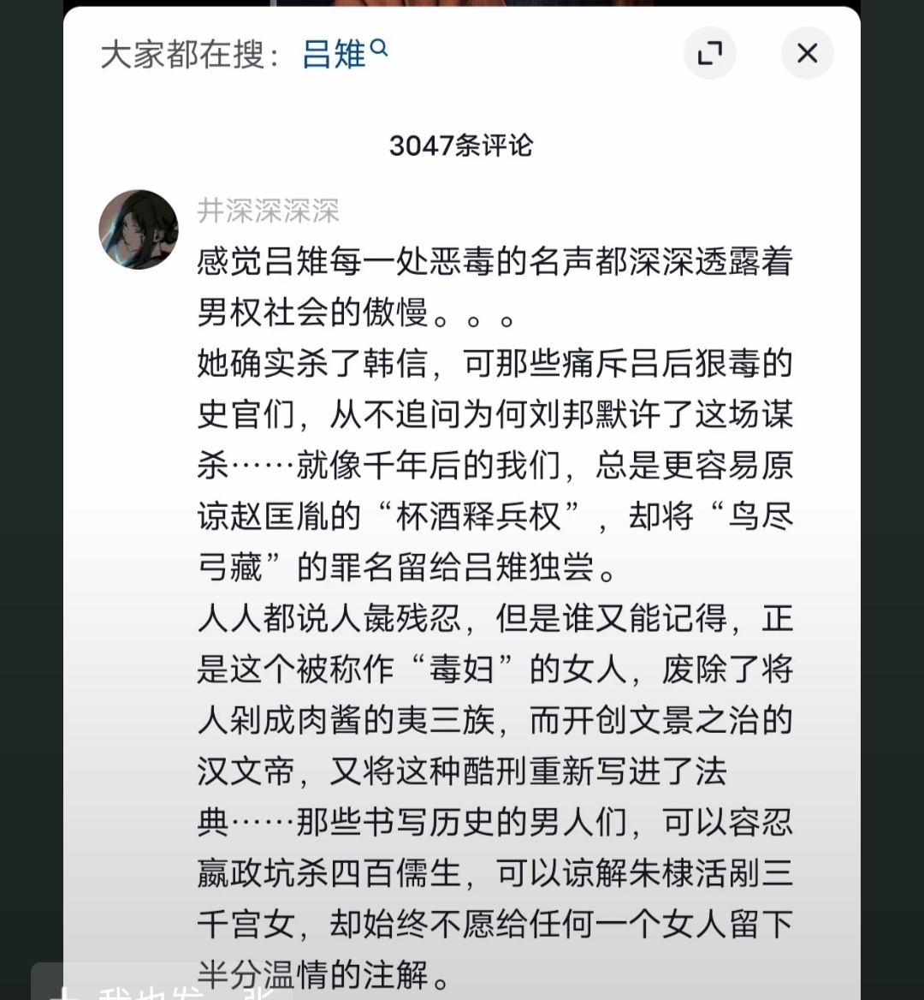

他的小脚丫是不是这样的？
科学备孕娃生出来真的巨好带。
原来孕吐是精子质量差
原来是我老公不抽烟不喝酒 所以我没孕吐
对账之后发现，美国人比我能吃苦耐劳[捂脸]
自从22年之后，我总觉得这个世界颠的有点不对劲
孩子大难不死必有后福，同时给这位主刀医生点赞[赞]
这位医生治好的[赞]
每次离开总是装作轻松的样子，微笑着说回去吧，转身泪湿眼底[捂脸]
失误最多的竟然是解说[泣不成声]
有一种雁回时的感觉
伊森真的太聪明了，也许不是读书料，但是口才性格情商高，天生适合做生意[赞][赞][赞]
以后伊森长大之后，什么样的女孩能降住他[笑哭][笑哭][笑哭][笑哭][笑哭][笑哭]
欧巴的感觉不知道有没有，你爸附体的既视感倒是有[泪奔]
你们的视频我都喜欢，但是更加喜欢看，孔雀东南飞[捂脸][尬笑][尬笑][偷笑][偷笑]
吕雉是即使一代一代男人不停抹黑，仍然被记录在帝王本纪的女人！！！
戚夫人成了人彘都是便宜她了
吕雉还是善良，应该两个一起做成人彘
每每看到吕雉的恶评就会想起这位姐姐的评论[流泪] 
小时候不懂，觉得吕雉太心狠手辣。长大后发现她还是太仁慈了。
吕雉说过一句话很有道理，戚姬，如果我们是情敌还可以化敌为友，如果是政敌，其结果一定是她赢
自从知道了她的事迹，我觉得不把刘邦杀了都是她留有余情，戚夫人也是恃宠而骄，罪有应得，带入吕雉我都恨死他们两个了
女人经历这么多之后做这些史书说她是毒妇，男人经历这些做比这还多是忍辱负重[微笑][微笑]
我要是吕雉会把刘邦和戚夫人一起做成人彘[呲牙]
小时候觉得她狠 [泣不成声]把戚夫人弄成人彘 现在看她那些经历 [酷拽]刘邦能活着都算她仁慈了
她对刘邦还是手下留情了，居然让刘邦寿终正寝
老徐打窝，钓的也不多…[困]
Read more: